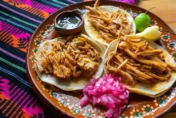

Descripcion
La cochinita pibil es uno de los platillos mas representativos de Yucatan. Se prepara con carne de cerdo marinada en achiote y jugo de naranja agria, y se cocina tradicionalmente en un horno bajo tierra.
Este platillo es muy popular en los desayunos yucatecos, especialmente los domingos.
Ingredientes
| Ingrediente | Cantidad |
|---|---|
| Carne de cerdo | 1 kg |
| Achiote | 100 g |
| Naranja agria | 1 taza |
| Ajo | 2 dientes |
| Sal | Al gusto |
| Hoja de platano | Varias hojas |
Preparacion
- Marinar la carne con achiote y jugo de naranja agria.
- Agregar ajo y sal al gusto.
- Dejar reposar la carne durante varias horas.
- Envolver la carne en hojas de platano.
- Cocinar en horno (tradicionalmente bajo tierra).
- Servir con cebolla morada y tortillas.
Consejos
Para mejorar el sabor, se recomienda dejar marinar la carne durante toda la noche.
Se puede acompañar con salsa picante o limon.